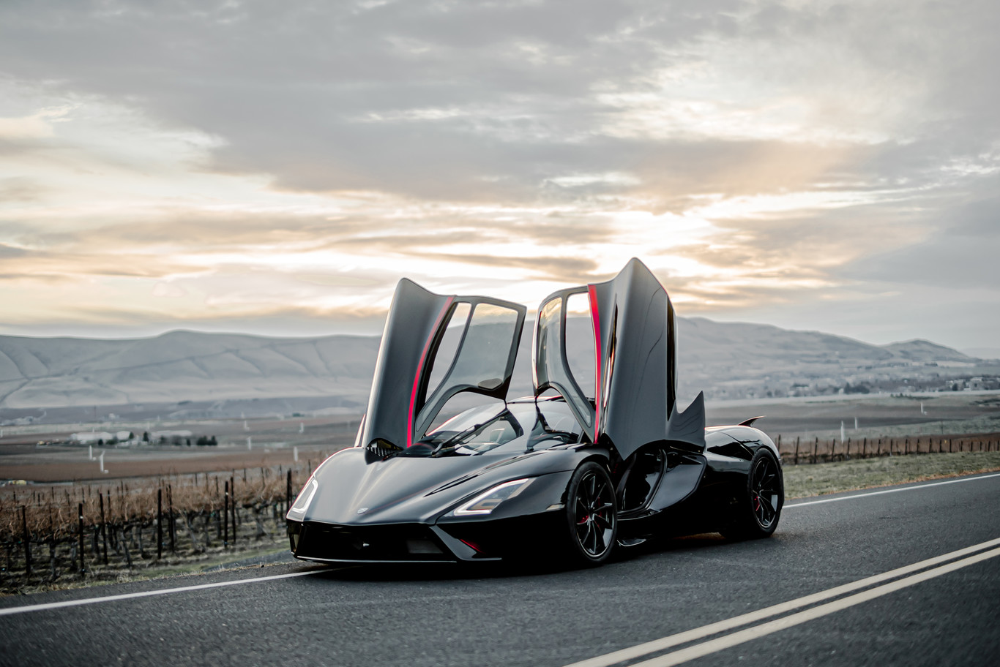
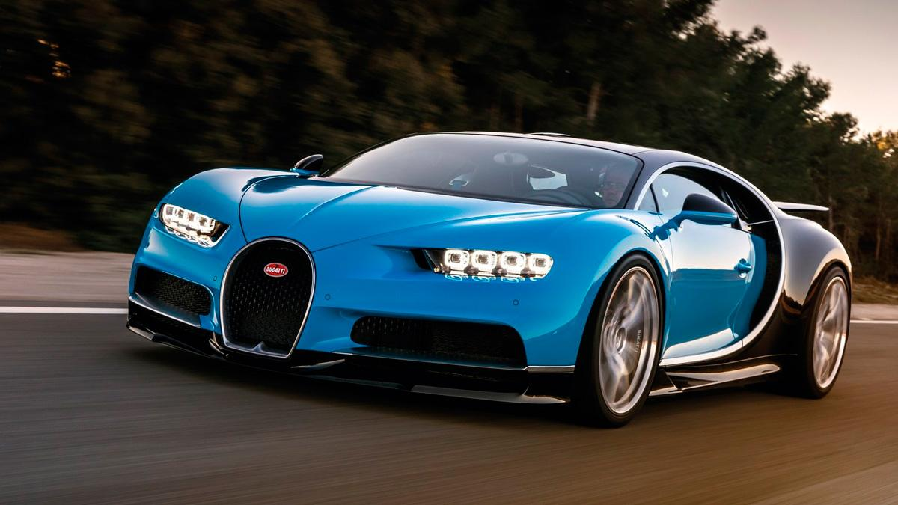
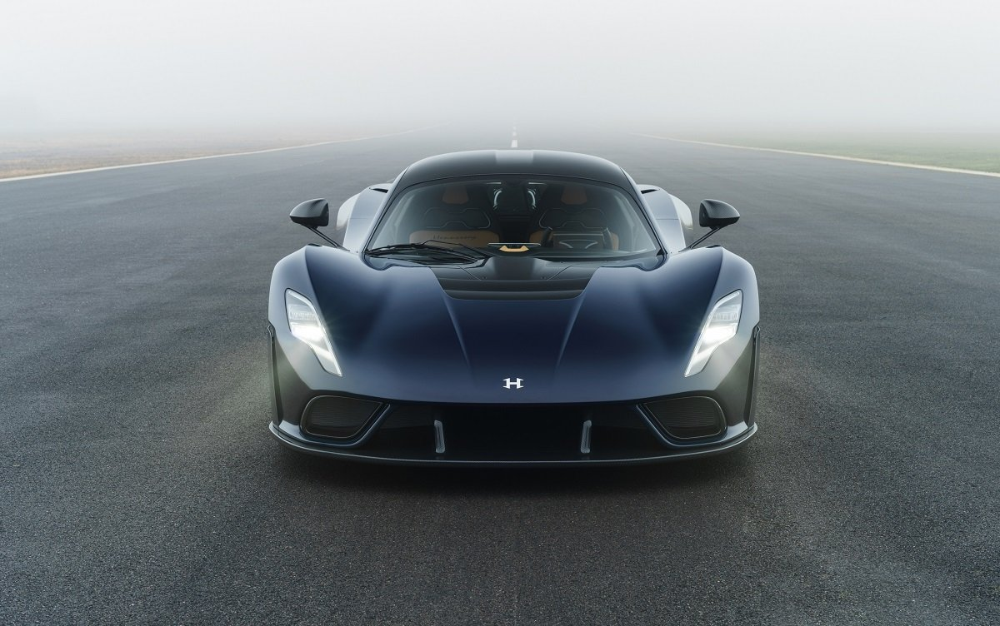
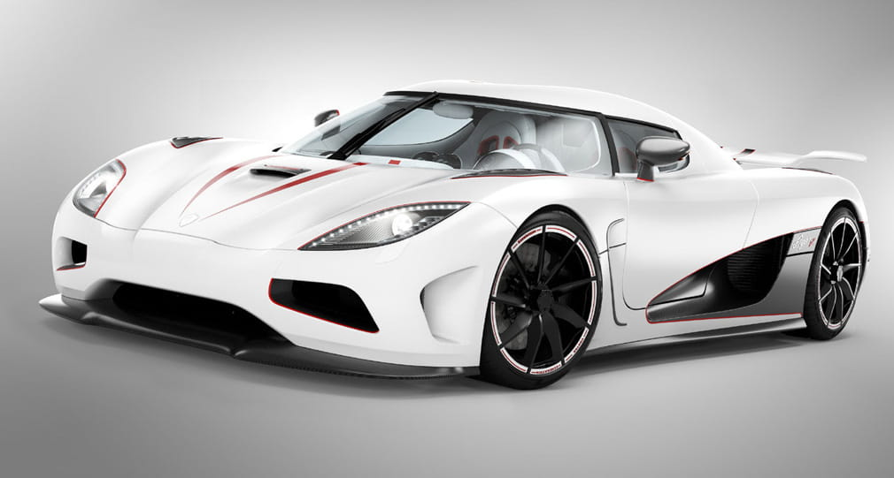
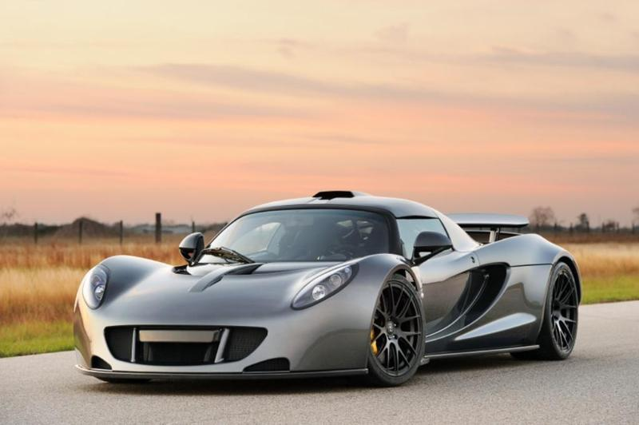
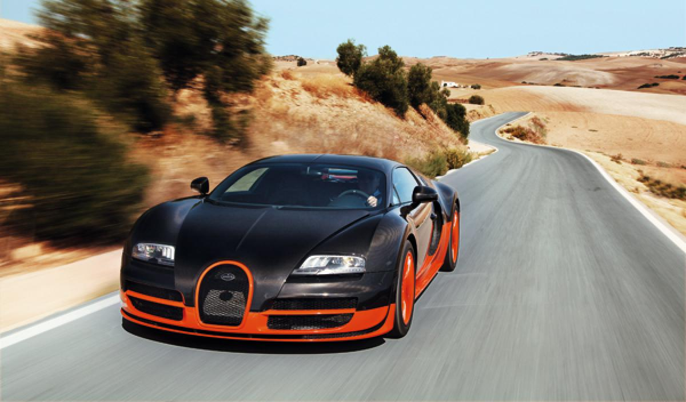
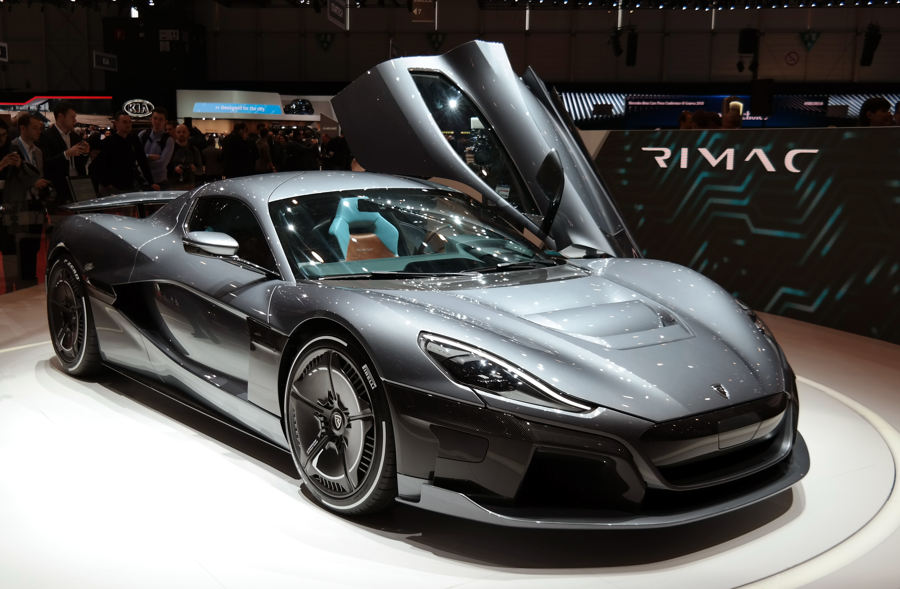
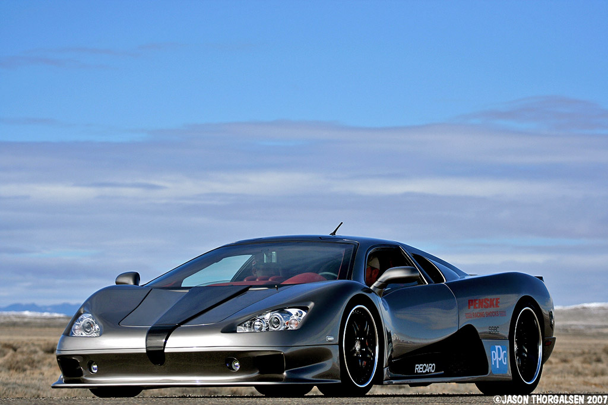
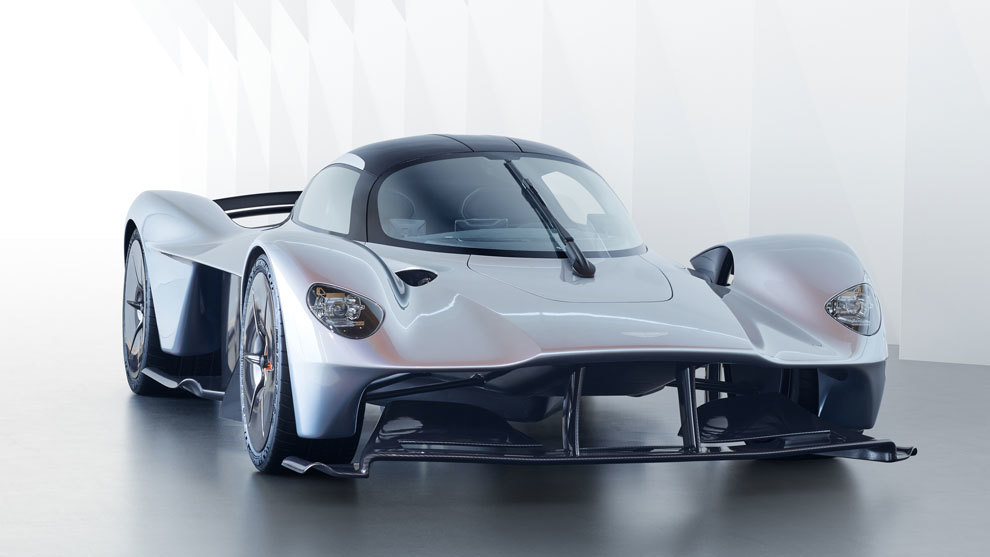
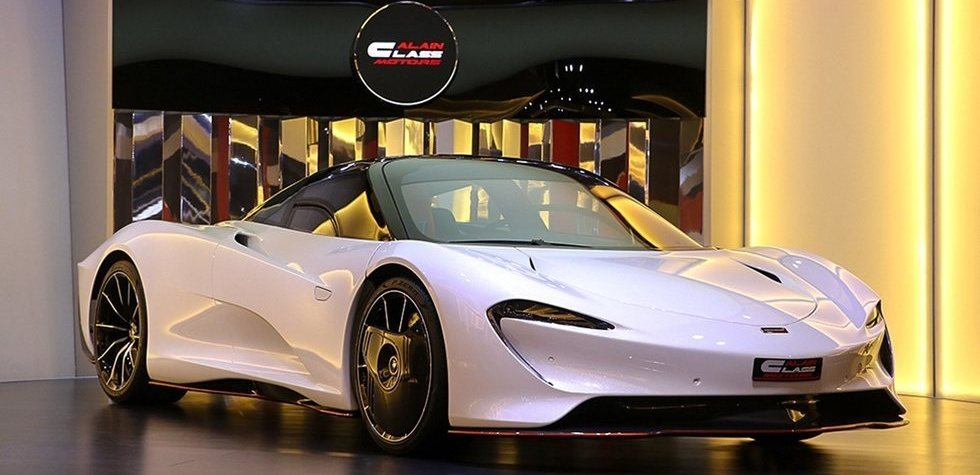

LOS AUTOS MÁS RÁPIDOS DE 2021

-
SSC Tuatara (508.55 km/h)
La potencia del auto más rápido del mundo proviene de un motor biturbo V8 de 5.9 litros y 1774 CV cuando está consumiendo E85, o 1368 CV usando combustible de 91 octanos. El auto alcanzó un peso de alrededor 1247 kilogramos.
-
Bugatti Chiron Super Sport (489.24 km/h)
El automóvil récord es una evolución de 1622 CV del Chiron regular. Podría ir incluso superar las 489 km/h, según Wallace, pero Bugatti anunció que dejará de perseguir récords de velocidad para enfocarse en otros proyectos.
-
Hennessey Venom F5 (484.4 km/h)
En términos de hojas de especificaciones, el Venom F5 de Hennessey es impresionante. Su velocidad máxima reclamada de 484 km/h deja atrás a varios por un margen muy significativo, aunque Hennessey no ha verificado sus números con el Libro Guinness de Récords Mundiales.
-
Koenigsegg Agera RS (447.39 km/h)
Koenigsegg ha hecho sus tareas ante testigos, y aunque en esta lista obtiene la medalla de plata, en el mundo “oficial” el Agera RS es el verdadero rey de la velocidad. Para establecer el récord oficial, Koenigsegg le pidió al Departamento de Transporte de Nevada que cerrara un tramo de 18 kilómetros de la Ruta 160 entre Las Vegas y Pahrump. En esta carretera pública, el superdeportivo sueco de 1177 CV alcanzó en un momento las 458 km/h durante su primera carrera, y 438 km/h durante la segunda, lo cual promedia 448 km/h.
-
Hennessey Venom GT (434 km/h)
Hennessey registró en una velocidad de 434 km/h en el Kennedy Space Center, pero solamente en una dirección. Usualmente se hace el recorrido en dos direcciones, se registra el promedio y se tiene en cuenta las condiciones del viento.
-
Bugatti Veyron Super Sport (431 km/h)
Tiene una velocidad de 431km/h, registrados en la pista Volkswagen Ehra-Lessein. Es reconocido por el libro Guinness de récords como el auto de producción más rápido del mundo. El Veyron Grand Sport Vitesse es el auto convertible más rápido.
-
Rimac Concept Two (415.2 km/h)
La compañía solo piensa fabricar 150 automóviles (incluyendo algunos para los EE.UU.), y se espera que su precio se sitúe en algún punto más allá del millón de dólares. Eso sí, Rimac recientemente consiguió la inversión de Porsche, por lo que es posible que la tecnología de la compañía alemana haga sus automóviles (un poco) más asequibles en el futuro.
-
SSC Ultimate Aero (411 km/h)
Shelby SuperCars (SSC) tuvo el título del carro más rápido del mundo. Alcanzó 411 km/h en el 2007, batiendo el récord de la versión no deportiva del Veyron. La velocidad fue alcanzada gracias a un motor V8 de 6.3 litros . No tiene ayudas eléctricas que le ayude a alcanzar ese poder, creando una experiencia única de conducción de autos para los expertos un escenario de muerte para los no profesionales.
-
Aston Martin Valkyrie (402.3 km/h)
Es una estadística impresionante por sí misma, pero el 12 cilindros es parte de un tren motriz híbrido en esta creación. Aston predice que la potencia total del Valkyrie se ubicará en torno a los 1146 CV , suficiente para alcanzar una velocidad máxima de 250 millas por hora. En todo caso, tendremos que esperar el modelo de producción definitivo y ver si cumple con esas predicciones.
-
McLaren Speedtail (402.3 km/h)
La producción de Speedtail se limitará a solo 106 unidades, que coinciden con la producción total de la F1, y todas ellas ya se han vendido a pesar de un precio fijo cercano a los $2.2 millones de dólares